# The packages we will use today
packages <- c("MASS", "GGally", "DHARMa", "mlbench", "sjPlot", "randomForest")
# This loops through the packages and installs them if not already installed
# for(p in packages) {
# if(!require(p, character.only = TRUE)){
# install.packages(p)
# }
# }
# Useful for reproducibility by others. See also package managers e.g. pacman
# Load the packages:
# **NB: Must load MASS before `tidyverse` because both have a `select()` function.**
# **The function that gets loaded 2nd is the one that R uses.**
library(MASS) # Functions and datasets for modern applied statistics
library(tidyverse)
library(GGally) # ggplot2 multivariate plots and matrix visualisations
library(DHARMa) # Diagnostic package for (G)LMMs
library(mlbench) # Provides benchmark datasets for machine learning and statistics
library(sjPlot) # Tools for visualising statistical models, especially regression results
library(randomForest) # Implementation of random forest algorithm📝 Practical: Generalised linear models and Random Forests
This worksheet will practice fitting and using generalised linear models. It will use ideas previously introduced in the linear and mixed effects modelling sessions and implement the approaches described in the videos using real data and R code. We will compare generalised linear models with Random Forests, a method from outside the linear modelling framework.
We’ll focus this week on humans, specifically the birthwt data set which give information about 189 births at an American medical centre.
Part 1: Loading and visualising the data
The birthwt data comes with the MASS package
1.1 Load up the data
Load the packages
Take a preliminary look at the data
birthwt |>
as_tibble()# A tibble: 189 × 10
low age lwt race smoke ptl ht ui ftv bwt
<int> <int> <int> <int> <int> <int> <int> <int> <int> <int>
1 0 19 182 2 0 0 0 1 0 2523
2 0 33 155 3 0 0 0 0 3 2551
3 0 20 105 1 1 0 0 0 1 2557
4 0 21 108 1 1 0 0 1 2 2594
5 0 18 107 1 1 0 0 1 0 2600
6 0 21 124 3 0 0 0 0 0 2622
7 0 22 118 1 0 0 0 0 1 2637
8 0 17 103 3 0 0 0 0 1 2637
9 0 29 123 1 1 0 0 0 1 2663
10 0 26 113 1 1 0 0 0 0 2665
# ℹ 179 more rows# Take a look at the help file to see what the columns each mean
?birthwtSlightly surprisingly, all the variables come through as the same type
Q1.1.1 What is the variable type that all the variables have been created as? What alternatives might be appropriate?
1.2 Take a first look at visualising the data
ggpairs(birthwt)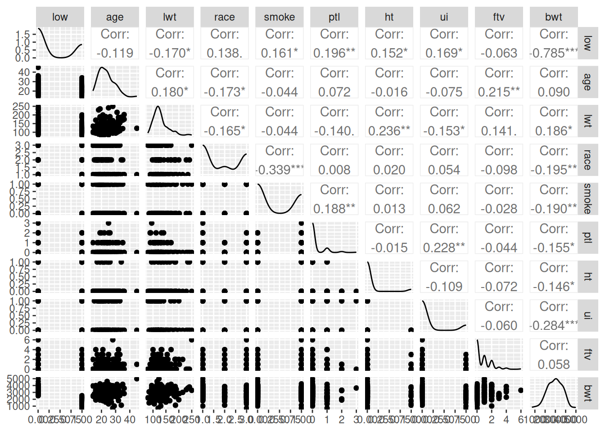
This isn’t a great visualisation, but it gives us an overview of the columns.
We’re going to focus initially on low birth-weight (column low) and see how well we can predict it from the other variables.
Q1.2.1 Create a plot (better than the pairs plot!) of low birth-weight as a function of age.
We’re going to start by focusing on a single explanatory variable age, to ask is maternal age predictive of the chance of low birth-weight?
The plot is not hugely encouraging that there’s any significant difference in the probability of low birth-weight across maternal age, but let’s fit the model to put some numbers on that intuition.
Part 2: Basic fits for the data
Low birth-weight is a binary measurement i.e. 1 or 0, in the data as we have it, but could equally be True or False; “yes” or “no”; “low” or “notLow”. If we count the numbers of low birth-weight births, we also know how many non-low-birth-weight births we’ve counted. This is a typical binomial response. Binomial responses can be put in a data table in different ways – here we have a single binary column; sometimes they could be two columns, with a count for the numbers of low birth-weight births in one and non-low-birth-weight births in the other. The good news is that binomial models can take binomial data in at least three different formats. Look at the help page ?family to see what these are – think how data in this format might be wrangled into one of the other formats.
2.1 Fit binomial model of low birth-weight as a function of maternal age
This is straightforward with glm()
m1 <- glm(low ~ age, family = binomial, data = birthwt)Q2.1.1 What is the dispersion paramter for this model?
clue: dispersion parameter for a binomial model works in the same way as for a Poisson model involving the residual deviance.
2.2 Look at what the binomial model is doing
First look at the default diagnostic plots
plot(m1)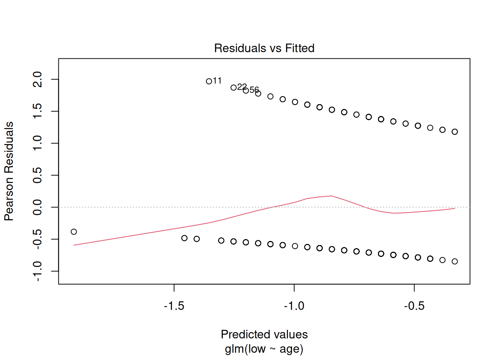
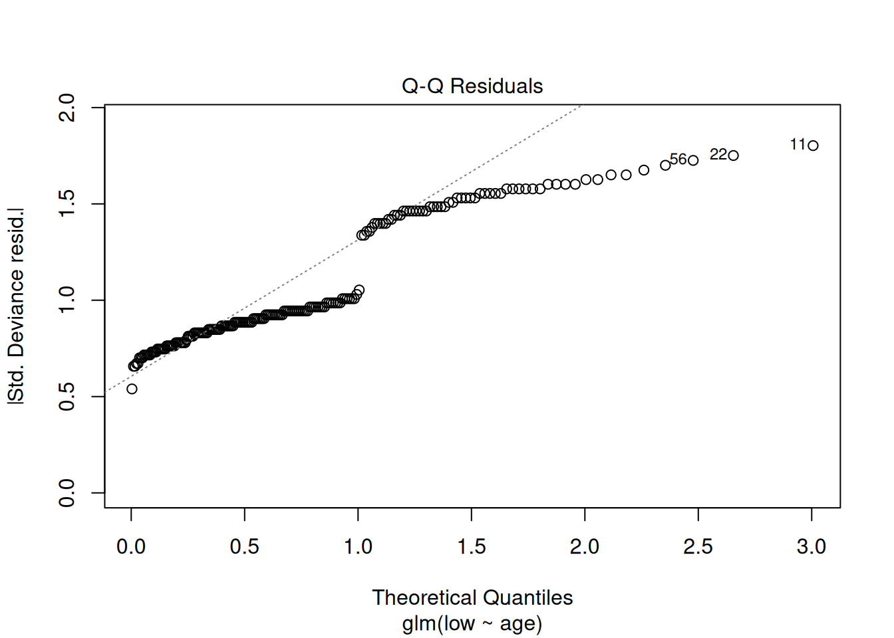
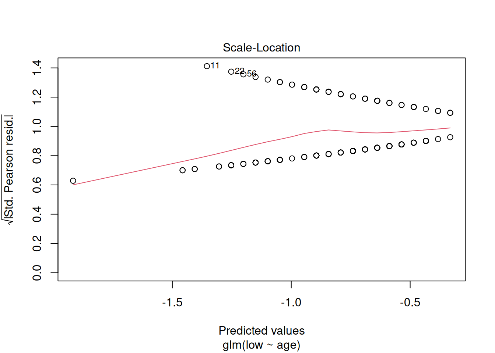
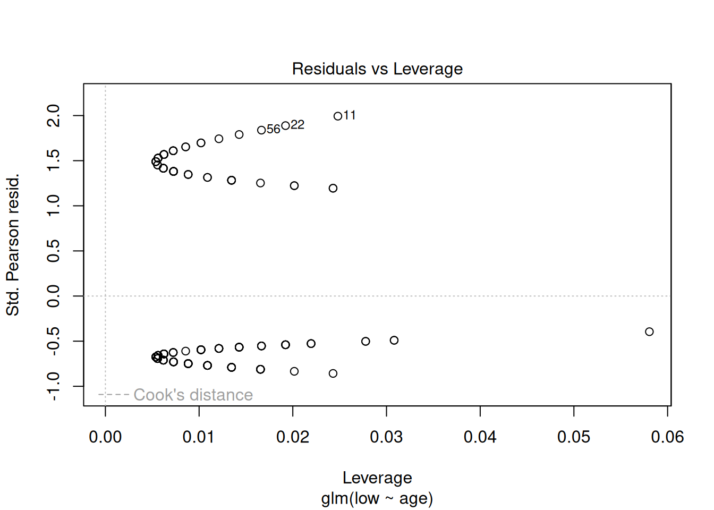
These plots have the same axes as a normal lm() (Gaussian) model, but they look appallingly bad – what’s going on?
Let’s try plotting the data with the model
birthwt |>
mutate(pred = predict(m1, type = "response")) |>
ggplot(aes(x = age, y = low)) +
geom_point(alpha = 0.2) +
geom_line(aes(y = pred)) +
scale_x_continuous("maternal age") +
theme_classic()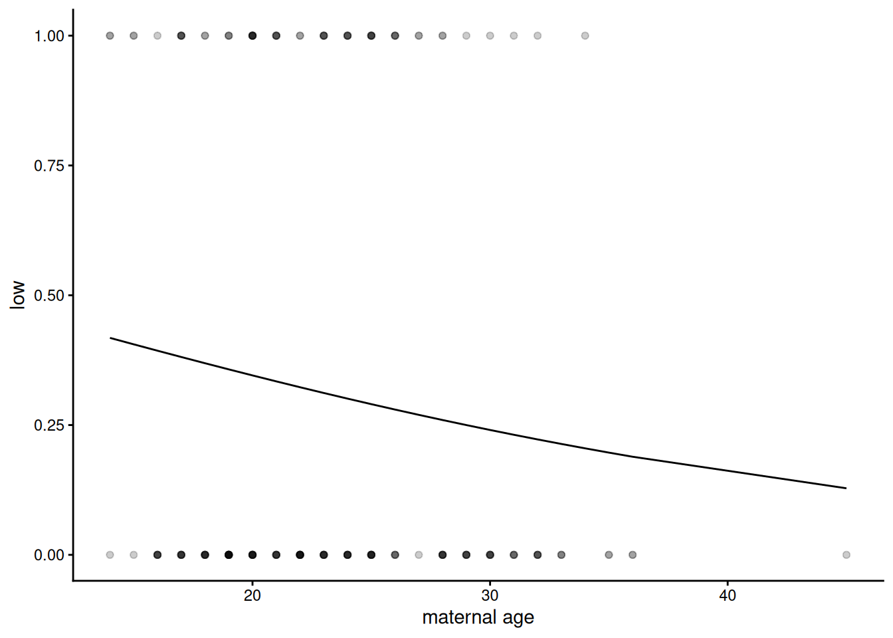
The prediction looks like a curvy line which goes nowhere near the data, which explains why the diagnostic plots look bizarre, but is it actually wrong?
Binomial regression is sometimes referred to as logistic regression This is because the curve we can see here is a logistic, S-shaped curve fit to data which are all either zero (not low birth-weight) or one (low birth-weight). It fits a switch between zeros and ones - where that is on the explanatory variable scale and how sharp, but the curve itself asymptotes – it never actually reaches zero or 1, so doesn’t go directly through the data. This is clearer on a dataset where the relationship is more obvious – between plasma glucose and having diabetes, as we have in the dataset we will look at below:
NB: This example originally used the dataset PimaIndiansDiabetes2, which was created from a study on diabetes prevalence among the Akimel O’odham community, whose land lies in what is now southern Arizona and northern Mexico. The name “Pima” was not chosen by the community themselves, but was given to them by European colonisers. It may have come from the phrase pi ʼañi mac or pi mac, meaning “I don’t know”, which they used repeatedly in their initial meetings with Spanish colonists. The Spanish referred to them as the Pima, which was later adopted by English-speaking colonisers. The Akimel Oʼodham called themselves Othama.
In 2026, this dataset was removed from the mlbench package as it was found to have been shared without proper consent. Instead, we will use a synthetic dataset SynthDiabetes2 that maintains the same structure as the original, but using simulated values.
data("SynthDiabetes2")
SynthDiabetes2 |>
filter(!is.na(glucose)) |> # Remove missing values
mutate(diabetes_bin = ifelse(diabetes == "pos", 1, 0)) |> # Convert the column of 'neg' and 'pos' into 1s and 0s
ggplot(aes(x = glucose, y = diabetes_bin )) +
geom_point(alpha = 0.2) +
geom_smooth(method = "glm",
method.args = list(family = "binomial")) + # Can get a glm binomial fit direct with geom_smooth
labs(
x = "Plasma Glucose Concentration",
y = "Probability of being diabetic"
) +
theme_classic()`geom_smooth()` using formula = 'y ~ x'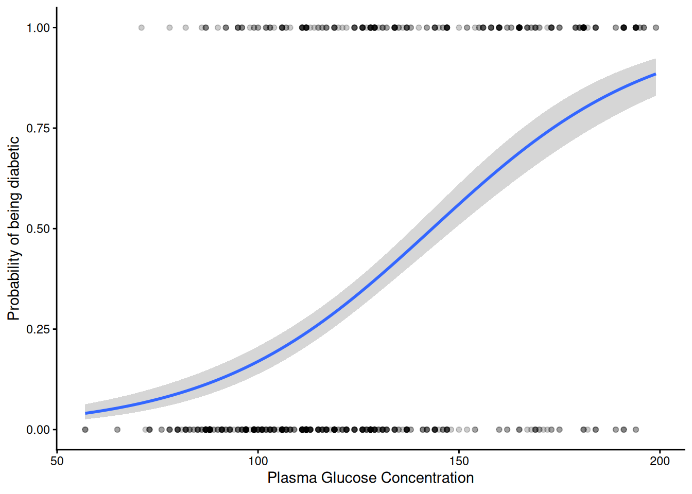
The S-shaped curve is symmetrical and has upper and lower asymptotes at 1 and 0. The fitted curve in between can be interpreted as estimating the probability of “success” i.e. being a one (in this case being diabetic) or a zero (not being diabetic).
Because the residuals plots for a binomial fit like this look pretty horrible and hard to interpret, the DHARMa package uses a simulation-based approach to create more interpretably scaled residuals (see vignette("DHARMa") for details). This approach works for many different kinds of linear models, including various generalised linear models and mixed effects models. The result can be interpreted in the same way as residual plots we’ve used previously – we ideally want a linear quantile-quantile plot and an evenly spread ‘stary sky’ of residuals against predictions. Going back to our model of low birth-weight as a function of age:
m1_dh <- simulateResiduals(m1)
plot(m1_dh)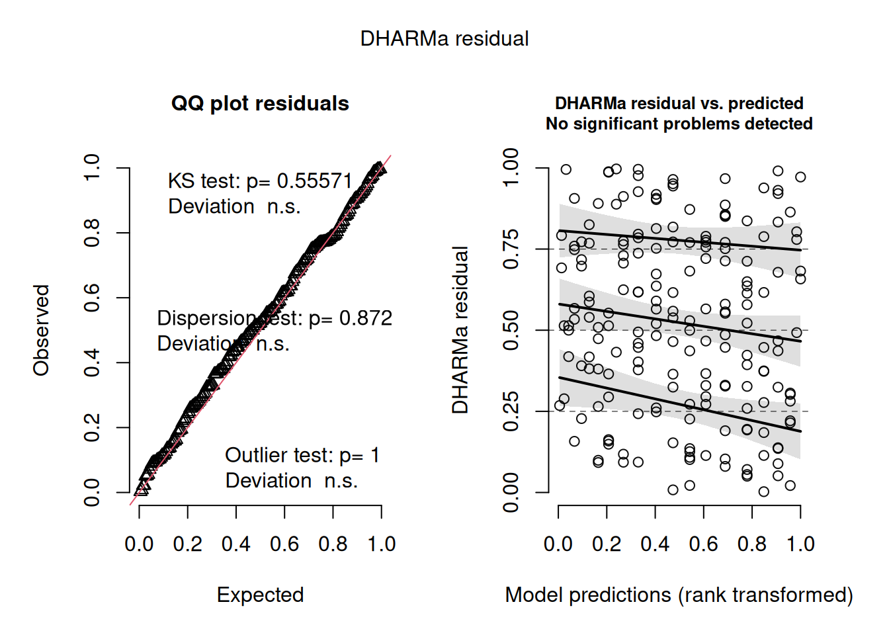
That looks pretty good.
However, does the model actually explain anything? The summary of the model didn’t give an \(R^2\) value and given the fact that we don’t expect the fit ever to go directly through any of the data, we probably shouldn’t expect one in quite the same way as a Gaussian model. However, we can calculate the proportion of variance or deviance explained, which is pretty easy to calculate from the same deviance value we used for the dispersion parameter (residual deviance) and the deviance before fitting the model (null deviance):
1-deviance(m1)/m1$null.deviance[1] 0.011761261.2% is pretty small for a proportion of variance explained!
Q2.2.1 Look back at the the Diabetes plot – guestimate the proportion of variation that model explains – now have a go at fitting it directly with glm() and calculate how much it actually is
clue: use the same data preparation as used for the plot above
Q2.2.2 Given that it only explains 1% of the variance, it seems unlikely that there’s going to be a significant effect of age alone on low birth-weight. However, it’s worth checking – find a p value associated with a hypothesis test for a simple effect of age on the probability of low birth-weight
There are three different ways we’ve done this – see if you can check at least two of them
So, by some measures at least, the effect of age on low birth weight is suggestive (jargon sometimes used for p values that are less than 0.1 but greater than 0.05). However, even if there is a suggestion of statistical significance, the fact that it explains so little of the variation implies that its biological significance or usefulness for prediction of low birth weight is limited or non-existent.
Part 3: Fitting more of the data
So if maternal age isn’t predictive of low birth weight, do we have any ability to predict low birth weight from the data we have?
3.1 Fitting very complex models
Naively we might want to take every variable we have and all their interactions, like this:
mfull <- glm(low ~ age * lwt * race * smoke * ptl * ht * ui * ftv,
family = binomial,
data = birthwt)Warning: glm.fit: algorithm did not convergeWarning: glm.fit: fitted probabilities numerically 0 or 1 occurredSurprisingly this has fitted with only a mild-looking warning. However, look at this model using summary(mfull) – loads of the parameters are NA (missing). It tells us this at the top of the coefficients table: “Coefficients: (167 not defined because of singularities)”. There is a rather obvious reason for this – we have nowhere near enough data. There are 8 explanatory variables, most of them binary and 2^8 = 256 this is how many parameters this model is trying to fit:
coef(mfull) |> length()[1] 256And yet we only have 189 data points – no parametric linear model can produce more fitted parameters than the number of numbers it takes in. In fact a rule of thumb is to have at least 10 data points for every parameter you want to fit. While this is not a particularly strong rule (e.g. compared with having 5 levels to estimate a random effect), we are not going to be able to parameterise complex interactions among all these variables from this size of dataset. The fact that glm does do something with such over-parameterised models can be useful, but shouldn’t be taken too seriously. lm does this too; lmer and glmer (for fitting linear mixed effects models and generalised linear mixed effects models respectively) are less forgiving by default.
So what can we do if we just want the best prediction model we can out of the data?
We could attempt to define a subset of the variables and their interactions that has a significant effect on the response variable. We’ve come across step() as a function that can reduce models based on AIC. However, maybe don’t run the following unless you want to clog up your R session and for it to fail because it never gets as far as a sensibly parameterised model:
#mred <- step(mfull)Better to start with a model that looks more reasonable to start with. This formula syntax will include only 2-way interactions:
mfull2 <- glm(low ~ (age + lwt + race + smoke + ptl + ht + ui + ftv)^2,
family = binomial,
data = birthwt)Here, the ^2 tells R to fit all two-way interaction terms for the terms within the brackets. If you wanted, you could look at all three-way interaction terms using ^3. Have a look at ?formula to see all the different ways you could write a model formula like this to define different main effects and interactions. (Note it does not tell R to square any of the variables; for that, you would need to enclose the variable in the function I() as we saw in a previous practical.)
Q3.1.1 How many data points do we have per parameter in this model?
Clearly this is fewer than the ≥10 we would like, but it’s a reasonable start
3.2 Fitting reduced models
To try and get a model that contains the explanatory variables we need and not those we don’t, we can try simplifying the complex model, an approach to model selection. Look through the printed output to see if you can work out what it’s doing:
mred1 <- step(mfull2)This reduced model has a much more appropriate complexity (14.5 data points per parameter - check this for yourself if in doubt).
How sure are we that all the parameters in this model have a significant effect on low birth weight?
We can look at the possible next step of model simplification via drop1() we can ask that to do a liklihood ratio test too (test = "LRT")
mred1 |>
drop1(test = "LRT") |>
as_tibble( rownames = "effect") |>
arrange(AIC)# A tibble: 7 × 6
effect Df Deviance AIC LRT `Pr(>Chi)`
<chr> <dbl> <dbl> <dbl> <dbl> <dbl>
1 <none> NA 183. 209. NA NA
2 lwt:smoke 1 186. 210. 2.31 0.129
3 age:smoke 1 186. 210. 2.87 0.0905
4 age:ptl 1 187. 211. 3.43 0.0641
5 ht 1 189. 213. 6.07 0.0137
6 ptl:ui 1 191. 215. 7.34 0.00673
7 age:ftv 1 199. 223. 15.1 0.000100Clearly this model has the lowest AIC, but removing the next effect (the lwt:smoke interaction) doesn’t make the model significantly worse by likelihood ratio test.
We can update a model to remove a single effect like this using the update() function:
mred2 <- update(mred1, ~.-lwt:smoke)Notice the slightly odd looking syntax ~.- This can be read “as a function of everything, minus” the dot represents all the effects currently in the model. So mred2 contains all the effects in mred1 minus lwt:smoke
It’s possible to continue this process by using drop1 again on the new model:
mred2 |>
drop1(test = "LRT") |>
as_tibble( rownames = "effect") |>
arrange(AIC)# A tibble: 7 × 6
effect Df Deviance AIC LRT `Pr(>Chi)`
<chr> <dbl> <dbl> <dbl> <dbl> <dbl>
1 <none> NA 186. 210. NA NA
2 age:ptl 1 189. 211. 3.10 0.0785
3 age:smoke 1 189. 211. 3.14 0.0763
4 lwt 1 191. 213. 5.31 0.0212
5 ptl:ui 1 193. 215. 7.44 0.00637
6 ht 1 193. 215. 7.57 0.00592
7 age:ftv 1 200. 222. 14.0 0.000187So again it looks like, while removing the age:ptl effect increases the AIC, we can’t really say that it is statistically significant as, by likelihood ratio test, removing it doesn’t make the model significantly worse, though it is suggestive (p = 0.078).
Q3.2.1 Continue this process of removing one effect at a time and checking by likelihood ratio test using drop1() until removing an effect makes the model significantly worse.
Q3.2.2 Calculate \(R^2\) values for both the first reduced model (mred1) and the further reduced model you’ve created – check the residuals on both – think about which might be the better model for what purposes
3.3 Interpreting the linear models
The proportion of variance explained isn’t massive, but it’s a lot better than the 1% we managed with age alone, though interestingly it does still involve a significant effect of age, in interaction, particularly with ftv. To help think about what this interaction might mean biologically, a good approach is to hold other variables at fixed values and see how the response changes as a function of these two variables of interest. This is known as looking at the marginal effects of explanatory variables and several packages exist that help visualise these. This is how we might do that for age and ftv using the sjPlot package:
plot_model(mred1, type = "pred", terms = c("age [all]", "ftv"))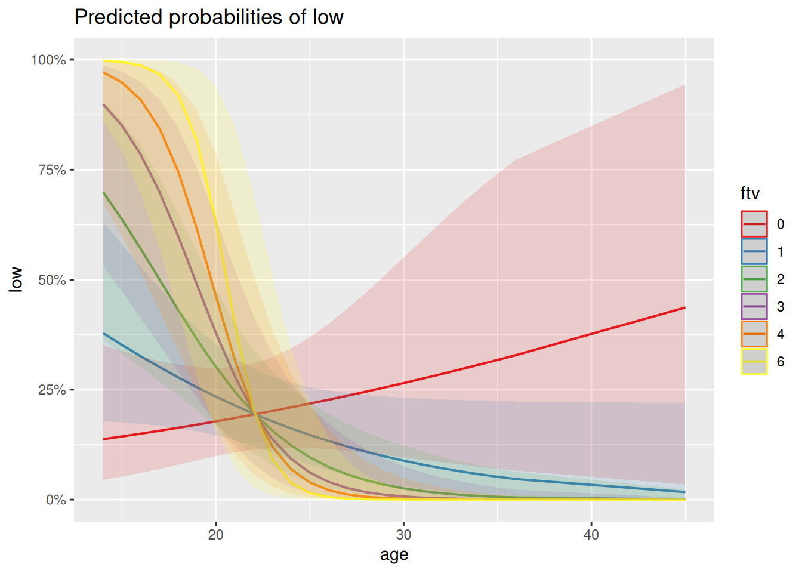
Q3.3.1 How might you interpret this plot in terms of the interaction between ftv and age? Is this what you would have understood just from looking at the coefficients in the model summary?
Generalised linear models can just be harder to figure out and interpret than normal/Gaussian models – the sjPlot package contains a range of plots that can help.
Let’s look at the predictions as a confusion matrix (turning probabilities of >0.5 into predictions of low birth weight and < 0.5 into predictions of non-low birth weight):
a <- birthwt |>
mutate(pred = predict(mred1, type = "response"),
lowPred = ifelse(pred > 0.5, 1, 0))
conf_glm <- table(actual = a$low, predicted = a$lowPred)
conf_glm predicted
actual 0 1
0 115 15
1 30 29Seems pretty good at predicting non-low birth weights (zeros) but at least half the time doesn’t predict low birth weight when it happens (ones), which isn’t ideal. If we think of the prediction error rate rather than the proportion of deviance explained, this comes out as a 24% error rate:
(conf_glm[2] + conf_glm[3])/sum(conf_glm)[1] 0.2380952This simplification approach used above has involved lots of choices to keep or drop variables based on a particular measure of goodness (AIC) and arbitrary thresholds of statistical significance (LRT). In that process there are risks of over- or under-fitting. Therefore to get a clearer assessment of the amount of variance either of the models explains, it would be much better not to rely on their own \(R^2\) values or error rates, but to see how they do on a test set of data not used to build the model, which we try below.
Part 4: Comparing different sorts of regression
It wasn’t straightforward to figure out what interactions we could or should reasonably consider in the binomial model – it feels like we could have missed out on important multi-way interactions just because we had to pick which interactions we wanted to focus on in advance of fitting the model. That might be ok, but if our primary aim is to get the best predictor possible, we might want something else. Let’s see how Random Forests does.
4.1 Fitting a random forest
We can use very similar syntax for fitting a random forest as for fitting a generalised linear model, except we don’t have to explicitly ask for interactions. However, because it can deal equally well with numeric and categorical response variables, we do need to make it clear what we want by making the response a factor. We can then look at the default output (no useful summary() method here). We’re also going to increase from the default number of trees in the forest (500) and set a seed so that we all can get the same forest, despite the randomness involved in fitting it:
set.seed(87)
mRF1 <- randomForest(low ~ age + lwt + race + smoke + ptl + ht + ui + ftv,
data = birthwt |> mutate(low = factor(low)),
ntree = 5000)
mRF1
Call:
randomForest(formula = low ~ age + lwt + race + smoke + ptl + ht + ui + ftv, data = mutate(birthwt, low = factor(low)), ntree = 5000)
Type of random forest: classification
Number of trees: 5000
No. of variables tried at each split: 2
OOB estimate of error rate: 31.22%
Confusion matrix:
0 1 class.error
0 114 16 0.1230769
1 43 16 0.7288136This is higher Out Of Bag (OOB) error rate than we had with our reduced logistic regression (24%), though the pattern looks similar – pretty good on predicting non-low birth-weights but missing most of the true cases of low birth-weight.
The default plot is really about how the error decreases as the number of trees in the forest increases, but it does also show how the error on the low birth-weight class (green) is much greater than the non-low class (red), to give that average 31% error:
plot(mRF1)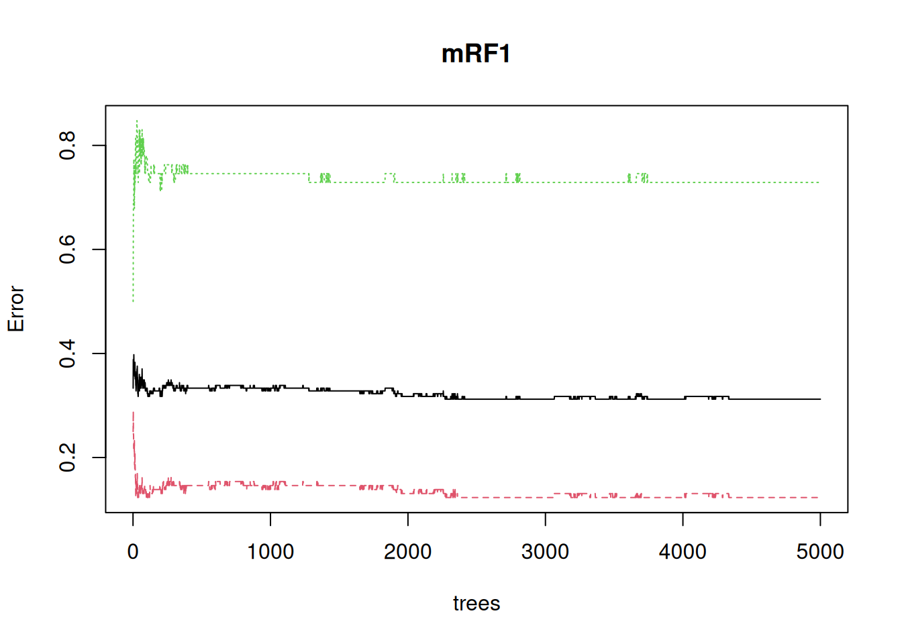
It’s also apparent that the error continues to settle down well above the default of 500 trees
4.2 Split up and use training and test data sets
It’s not obvious that either the logistic regression or the random forest has really avoided over-fitting. Let’s try creating training and test sets, to see how they do on unseen data
set.seed(23)
train <- birthwt |>
slice_sample(prop = 0.8) # Randomly sample 80% of rows
test <- birthwt |>
anti_join(train) # Use the remaining 20% of rows for a test setJoining with `by = join_by(low, age, lwt, race, smoke, ptl, ht, ui, ftv, bwt)`Fit both kinds of model to the training data; first a logistic regression, in the same way as before
mGLM_tt <- glm(low ~ (age+lwt+race+smoke+ptl+ht+ui+ftv)^2,
family = binomial,
data = train) |>
step(trace = 0)First let’s check that it’s doing a similar job to the original on the training data by extracting a confusion matrix and the percent error
train <- train |>
mutate(pred = predict(mGLM_tt, type = "response"),
lowPred = ifelse(pred > 0.5, 1, 0))
conf_glm_trn <- table(actual = train$low, predicted = train$lowPred)
conf_glm_trn predicted
actual 0 1
0 97 7
1 22 25(conf_glm_trn[2] + conf_glm_trn[3])/sum(conf_glm_trn)[1] 0.192053On the training data it seems to think it’s doing a bit better than the model on the whole data (19% error versus 24% error), but in a similar ball-park
Now extract both the confusion matrix and the % error on the test data
test <- test |>
mutate(pred = predict(mGLM_tt, newdata = test, type = "response"),
lowPred = ifelse(pred > 0.5, 1, 0))
conf_glm_tt <- table(actual = test$low, predicted = test$lowPred)
conf_glm_tt predicted
actual 0 1
0 22 4
1 8 4(conf_glm_tt[2] + conf_glm_tt[3])/sum(conf_glm_tt)[1] 0.3157895That error seems markedly higher (32% versus 19%) and the true positives (low birth-weight called as low birth-weight) have moved from the second largest class to being the joint smallest class. All this suggest that the model was over-fitted to the training data.
Then the random forest, which has an argument for putting test data straight into the original function call and getting everything at once:
set.seed(95)
mRF_tt <- randomForest(low ~ age+lwt+race+smoke+ptl+ht+ui+ftv,
data = train |> mutate(low = factor(low)),
ntree = 5000,
xtest = test |> select(c(age, lwt, race, smoke, ptl, ht, ui, ftv)),
ytest = test |> mutate(low = factor(low)) |> pull(low))
mRF_tt
Call:
randomForest(formula = low ~ age + lwt + race + smoke + ptl + ht + ui + ftv, data = mutate(train, low = factor(low)), ntree = 5000, xtest = select(test, c(age, lwt, race, smoke, ptl, ht, ui, ftv)), ytest = pull(mutate(test, low = factor(low)), low))
Type of random forest: classification
Number of trees: 5000
No. of variables tried at each split: 2
OOB estimate of error rate: 35.1%
Confusion matrix:
0 1 class.error
0 88 16 0.1538462
1 37 10 0.7872340
Test set error rate: 28.95%
Confusion matrix:
0 1 class.error
0 25 1 0.03846154
1 10 2 0.83333333This one has gone the other way – the performance on the test set is actually somewhat better than the training set, though that is mostly down to particularly good (/lucky) performance on the negatives, with only 1/26 mis-predicted. This suggests both that random forests has not over-fit to the training data and that the true error rate on unseen data is pretty similar to that of the logistic regression model, at around 30%
Note
If you are getting an error message here, the issue is likely due to select(). You may have loaded MASS after tidyverse, which redefines what the select() function does. Try specifying the tidyverse version by using dplyr::select() instead.
4.3 Interpret the random forest
There are packages to try out here (pdp, randomForestExplainer), but the most basic looking into the black box is to ask what the most important variables are. For this it’s best to use the importance = TRUE argument to randomForest() to include a (better) importance measure which can be directly plotted using varImpPlot().
set.seed(87)
mRF2 <- randomForest(low ~ age+lwt+race+smoke+ptl+ht+ui+ftv, data = birthwt |> mutate(low = factor(low)), ntree = 5000, importance =TRUE)
varImpPlot(mRF2)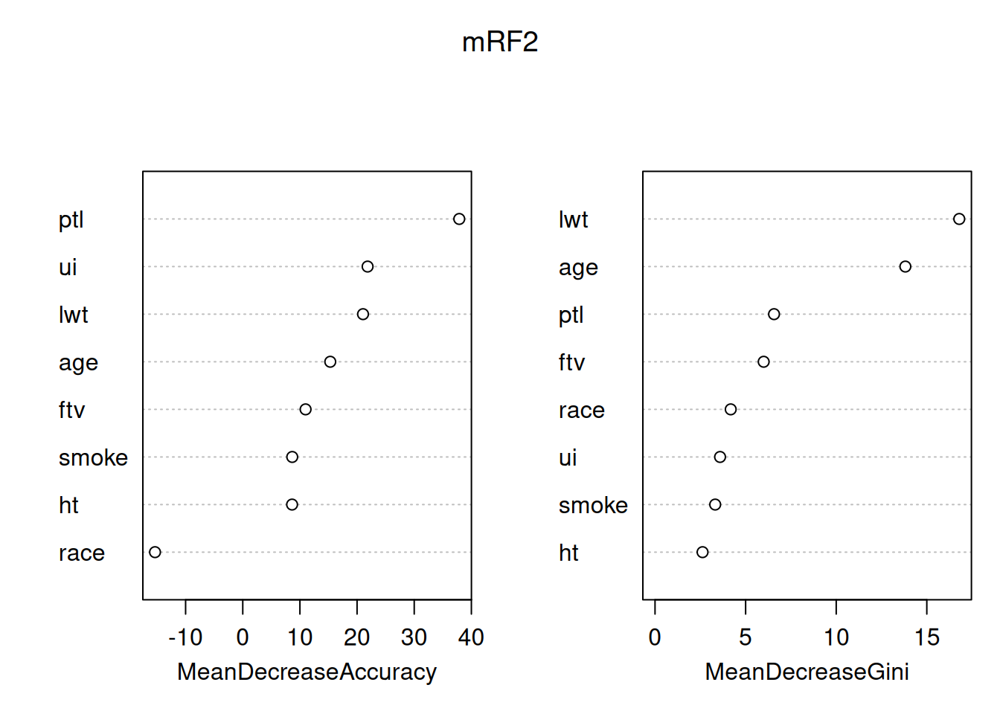
By default this plots out two importance measures from the most to the least important - from this it’s clear that they are not the same. You can read about how these different measures are calculated at ?importance. The interpretation is that the mean decrease in Gini index (a measure of the ‘node impurity’ for classification, there’s a different one for regression with a continuouis response) tells us about what the variables have done in this model. In contrast, the Mean decrease in accuracy uses the out of bag data and permutation to attempt to get at the importance of the variables for prediction, so is usually the better one to consider. The message here is that, in predicting low birth-weight, the number of previous premature labours is particularly helpful, all other variables have some useful association, except race, which is worse than useless (removing it increases rather than decreases accuracy).
Q4.3.1 Look at the variable importance plot for the random forest fitted to the 80% training data – how reproducible are these importances?
Interpreting importances in random forest models needs to be done with great caution and care. The fact that 80% of the data gives a different answer may reflect on the size of the dataset – 189 is small by the standards of machine learning – random forests will work well with much bigger datasets and we might get better stability for the importances from models using them. In either case a good approach can be to compare the importance of a variable in your model to the importance of the same variable in a model where the association between that explanatory variable and the response variable has been deliberately broken. That can be done by randomly permuting either the response variable, or that explanatory variable alone. You can try this for yourself (the sample() function is particularly good for creating random permutations), but this is also an approach taken to model selection using random forests by the Boruta package.
4.4 Reflections on the modelling
It’s important not to interpret any of the associations found here as direct causes – it is completely unclear why these variables were collected rather than others (though it’s fair to assume that convenience and historical contingency/biases come into it) – a model will use a variable like age as a proxy for some of the many other things that are correlated with it but weren’t measured. Instead, models like this highlight associations that exist, providing starting points or hypotheses, ideally for experimental studies that really can pick apart causality. What we’ve done is a benign exercise that could in principle point towards better medical approaches to low birth weight. However, what we have also done is create a black-box model with a protected charateristic (race) as an input. Creation and simplistic interpretation of very similar models for crime has rightly got police forces into a lot of trouble.
We should ask whether we started in the right place – doctors love to dichotomise – in this case we’ve gone along with them – we’ve analysed ‘low’ versus non-low birth weight when we had the actual birth weight in the table all along. What does this variable look like?
birthwt |>
ggplot(aes(x = bwt, fill = factor(low))) +
geom_histogram(bins = 20) +
geom_vline(xintercept = 2500, colour = "red", linetype = 2) +
theme_classic()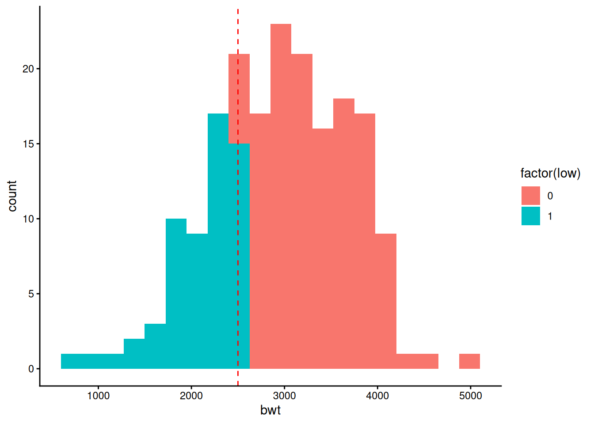
That looks very much like a continuous distribution with a line drawn through it at a convenient round number (2.5kg) that has nothing to do with biology. Given which, perhaps it would be better just fit birth weight itself?
Q4.4.1 Go back and fit both a linear model and a random forest to birth-weight (bwt) directly – what is similar and different to fitting a binary low birthweight response?
It would be possible to do the full fitting separately to training and test sets – feel free to try such things, but for now just fit to the full data.
randomForestis the package that gives the original implementation of the random forests algorithm in R. However there are quicker versions out there, notably in therangerpackage. Similarly there are other random forests implementations that specialise in particular data types, such as survival forests in therandomForestSRCpackage and theorfpackage for ordered responses.In this workshop, the effectiveness of linear modelling and random forests has been similar – either method gets to about the same error rate – we might prefer a linear model for its interpretability or a random forest model for not needing the model simplification step that gave over-fitting to training data. However with this dataset we were right on the edge of how many explanatory variables linear modelling could deal with in terms of considering interactions at all. Random Forest will become the much better choice if we have more explanatory variables (as would seem reasonable for this kind of dataset) and want to consider interactions – as we saw for
ageinteractions can be important for seeing any effect at all. On the other hand, for hypothesis testing and parameterisation on a more focused set of explanatory variables, linear modelling remains much more straightforward and powerful.